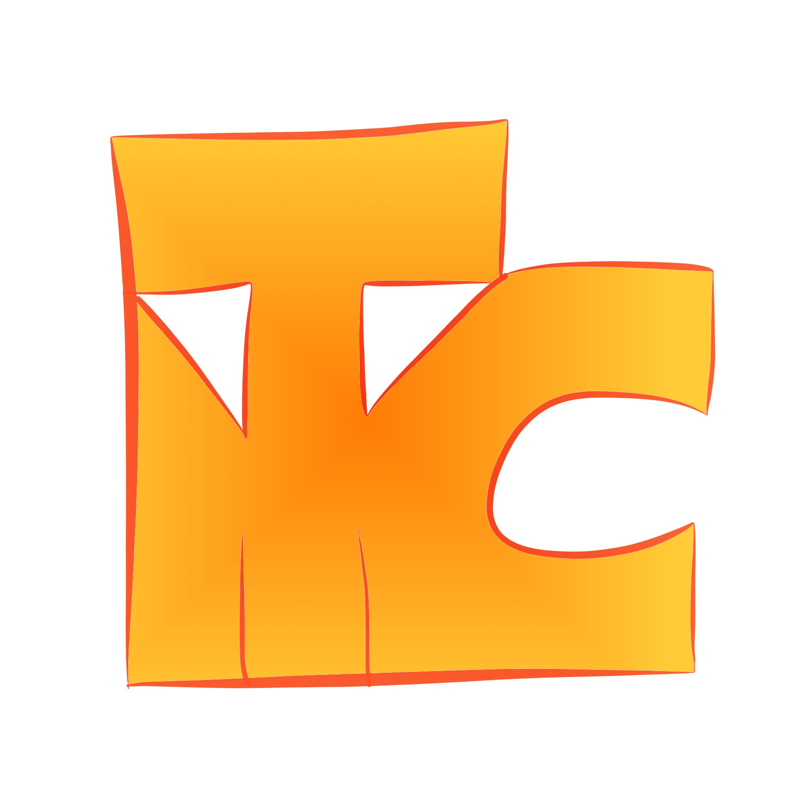

Меня зовут Максим, мне 30, я провизор, и вдруг внезапно захотел попробовать себя в программировании. Для того, чтобы понять, моё ли это вообще, я решил пройти курс Основы программирования на GeekBrains.ru.
На этом сайте, который, возможно, когда-нибудь станет чем-то более серьёзным, чем пара страничек, представлены результаты моего обучения. Здесь вы можете сыграть в две игры: Загадки и Угадай число, которые я написал собственными руками, изредка включая и голову.